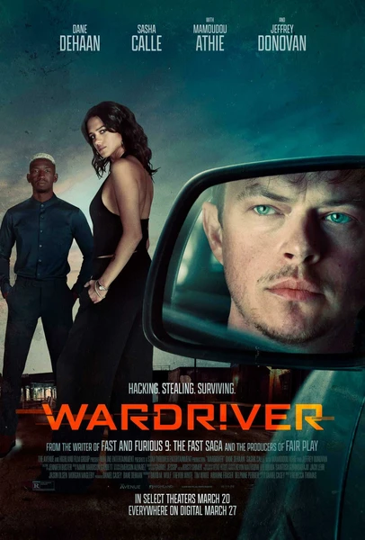

Фильм · 2026 · Драма, Триллер
История команды вардрайверов, для которых открытые Wi-Fi-сети были не уязвимостью, а приглашением к действию. Начав со взлома домашних сетей ради адреналина, герои постепенно втягиваются в экономику даркнета: пароли, банковские карты, базы данных — у всего есть цена и покупатель. Криминальная драма о том, как тонкая грань — всего в один клик мыши — отделяет простое любопытство от прибыльного преступного бизнеса, и о том, как быстро погоня за адреналином оборачивается долгами.
The story of a wardriving crew for whom open Wi-Fi networks were not a vulnerability but an invitation. Starting with home-network hacks for the adrenaline, the heroes slide into the darknet economy: passwords, cards, databases — everything has a price and a buyer. A crime drama about how 'we were just curious' and 'this is a profitable business' are one mouse click apart, and how quickly adrenaline turns into debt.
← Вернуться в каталог IT Movies